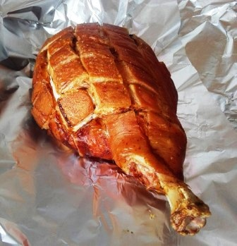
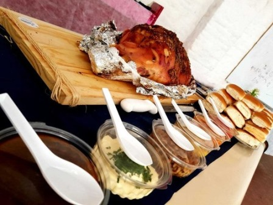

Pernil elaborado en el día, cocinado en hornos pizzeros. Lo entregamos envuelto en aluminio y papel fil, por el tipo de cocción "se desarma" al momento de servirlo y se asegura total coccion de la pierna. INCLUYE: panes (cantidad de acuerdo a los kg del pernil requerido); portapernil y 10 salsas:
- Mayonesa
- Mayonesa de Apio
- Mayonesa de Ajo
- Mayonesa de Choclo
- Panceta
- Cebollas
- Ensalada Criollita
- Salsa Barbacoa
- chimichurri
- salsa de mostaza ahumada